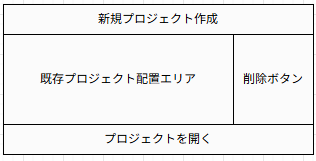
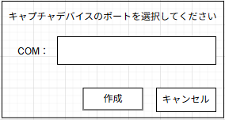
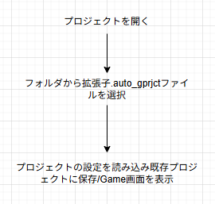

AutoPlayCraft 設計資料
AutoPlayCraft の設計・開発タスクをまとめた資料です。
開発タスク一覧
1. GUI の作成
ゲーム画面の表示と操作を統合するユーザーインターフェースを構築します。
キャプチャ映像をリアルタイムで表示する
自動化・手動操作・設定などを選択できるメニューを作成する
操作画面のレイアウトを編集できるようにする
GUI から Switch へ直接操作を送信できるようにする
2. AI の作成
ゲーム画面を解析し、状態に応じた操作を判断する AI を構築します。
映像からゲームタイトルを識別する
戦闘・フィールド・メニューなどの画面状態を判別する
メニュー階層と現在位置を推定する
ボックス内の位置・選択状態を解析して操作する
色違い・ステータス・個体などからポケモンを判定する
ミニマップから現在地を推定し、移動ルートを生成する
3. コントローラーの作成
Raspberry Pi Pico を用いて Switch に入力信号を送るコントローラーを構築します。
配線・基板・ケースを設計する
PC からの指示を HID 信号として送信するファームウェアを開発する
USB シリアルや HID で PC と連携する
4. 発表資料の作成
Switch → キャプチャ → PC → Pico → Switch のシステム構成図を作成する
画像解析から操作生成までの AI 処理フローを説明する
GUI のスクリーンショットを掲載する
デモ動画を準備する
全体フロー
Game画面
プロジェクト選択画面

名前 |
コントロールの種類 |
処理 |
|---|---|---|
新規プロジェクト作成 |
ボタン |
新規プロジェクト作成用のフォームを開く |
既存プロジェクト配置エリア |
ボタン |
プロジェクトを保存した場合に次回から表示される |
削除ボタン |
ボタン |
既存プロジェクトの項目の横にセットで配置される。押すと同じ行の既存プロジェクトを削除する |
プロジェクトを開く |
ボタン |
別のフォルダにあるプロジェクトを読み込む |
新規プロジェクト作成用画面

プロジェクトを開く
